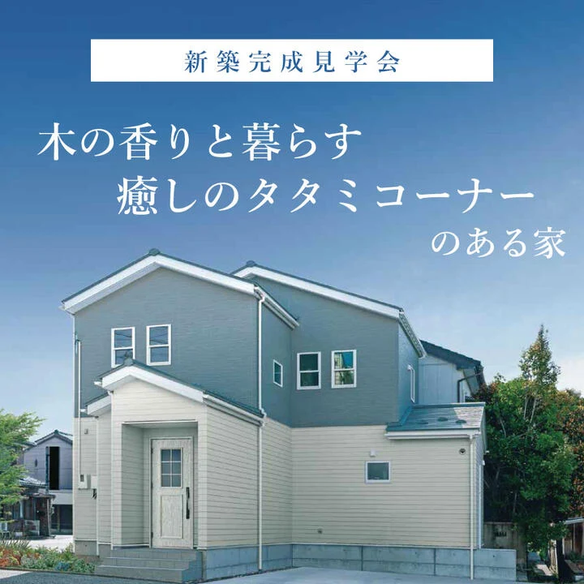
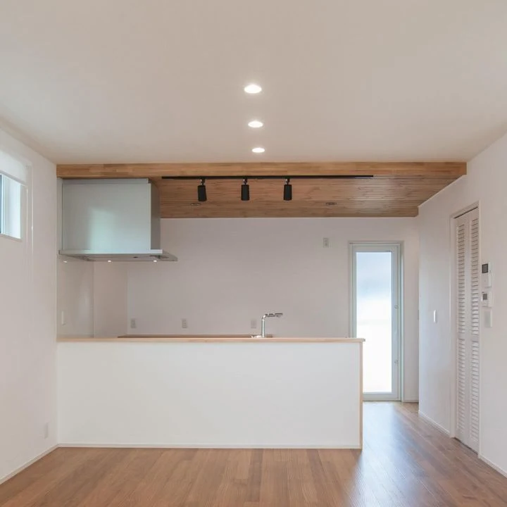
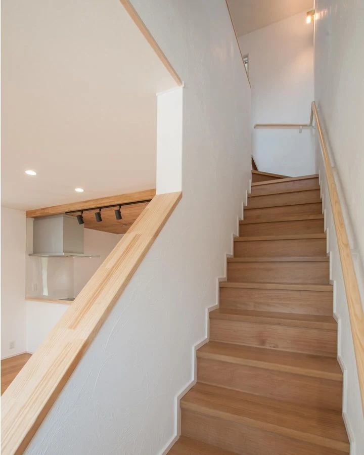
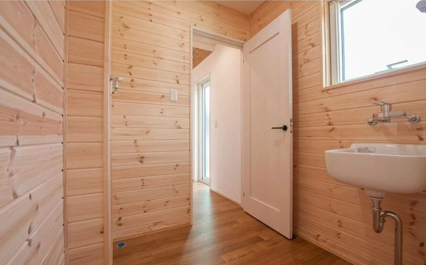
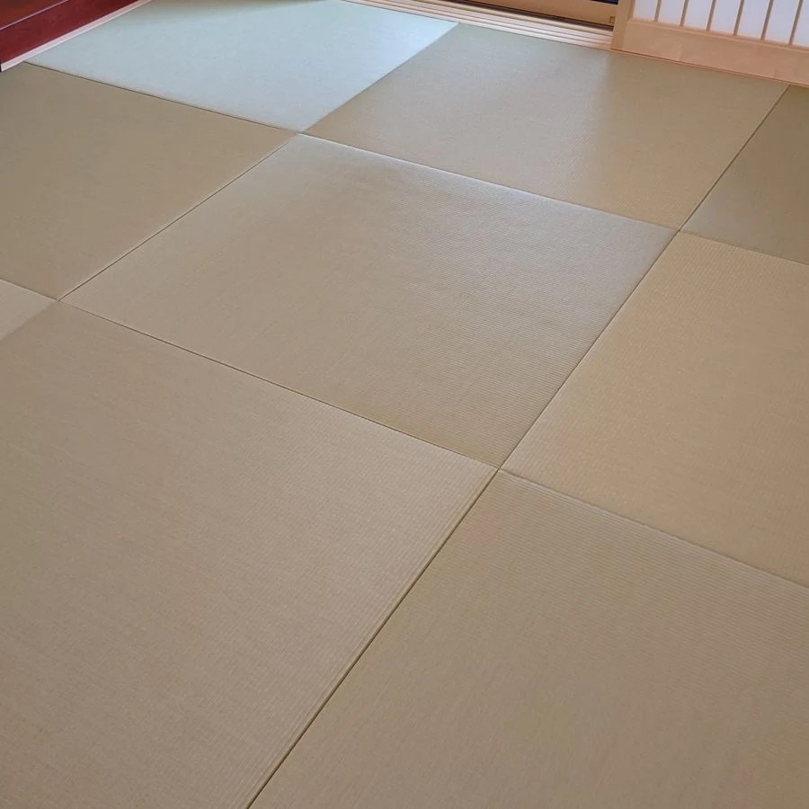
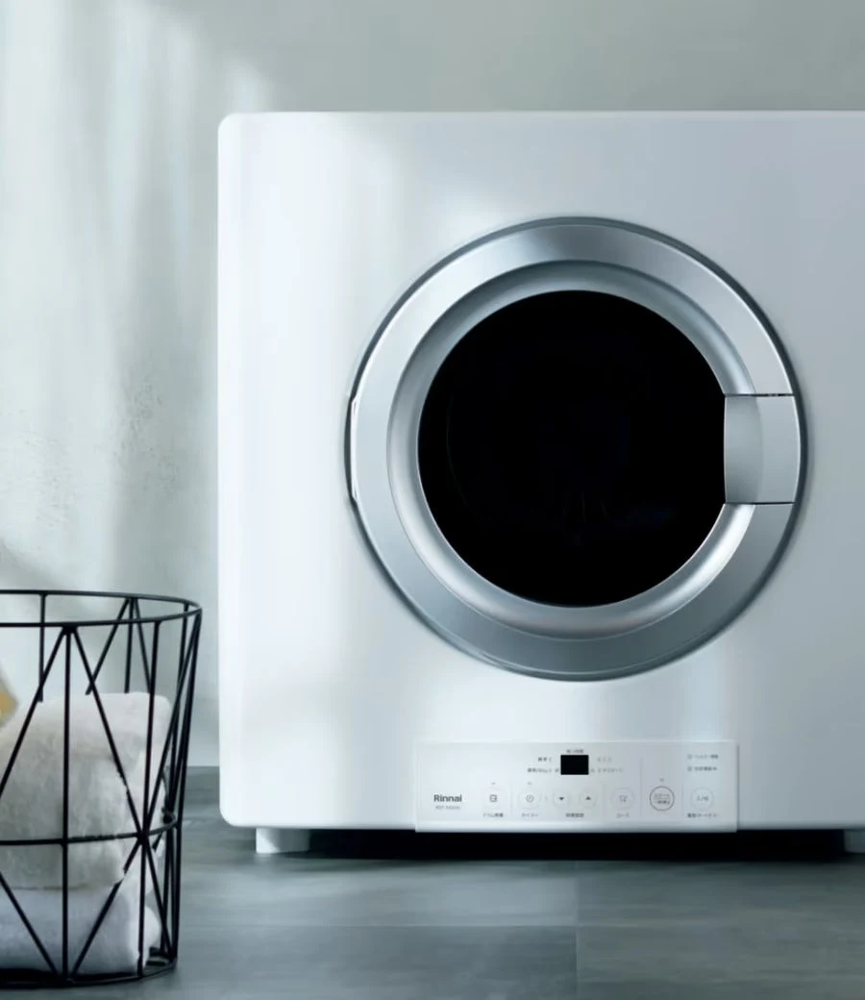
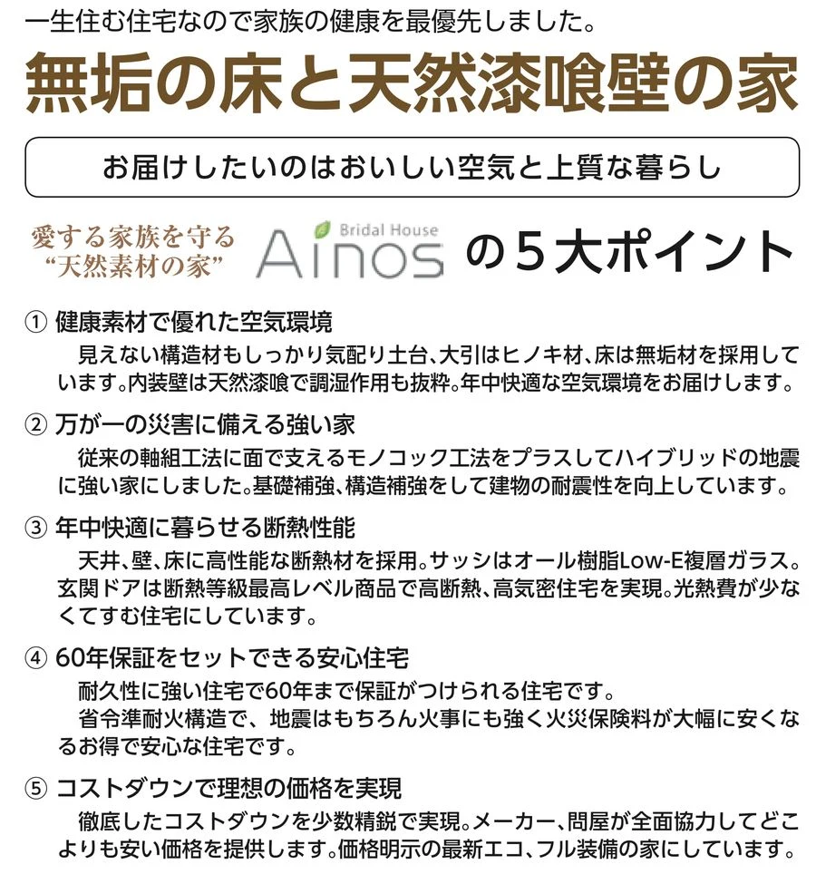

イベント情報
（終了しました）【高岡市上関】木の香りと暮らす癒しのタタミコーナーのある家
詳しいご案内
日程・価格・募集内容などは、掲載当時の情報です。
11月9日(土)･10(日) 2日間限定
「高岡市上関」見学会
こだわりの詰まった「癒し」の空間
家族が揃って人生の多くの時間を過ごす場所だから、家族の健康を最優先に考えながら、その場に居るだけで癒される空間を目指して建てられた家。
辿り着いたのは、漆喰（しっくい）の壁と無垢（むく）の床材という『天然素材』に囲まれた空間。
どちらも湿度が適度に保たれる効果のある "呼吸する" 素材だから、信じられないくらい空気が軽く、ジメジメした湿気やカラカラの乾燥とは別世界で、1歩踏み入れた瞬間に「高原の爽やかな空気」の様な心地良さを体感できる、家中すべてが「癒し」の空間になりました。
「癒しの空気を是非味わっていただきたい」お施主様のご厚意で、その違いをしっかりと体感できる2日間の見学会を開催します。
癒しを求めた３つのこだわり
１．"全室"天然素材の床と壁
２．心が求めるタタミコーナー
３．大量の洗濯物が乾くホームランドリー

１．"全室"天然素材の床と壁

白さが際立つ「漆喰の壁」は清潔感が溢れる仕上がりです。
無垢材の床はついつい裸足で歩きたくなる心地よさです。
（画像は当社施工イメージです）
無垢材の床はついつい裸足で歩きたくなる心地よさです。
（画像は当社施工イメージです）

階段の壁、階段の踏み板も、もちろん天然素材の漆喰と無垢材を使用しています。
（画像は当社施工イメージです）
（画像は当社施工イメージです）

脱衣所の壁は無垢のパイン材仕上げ。
風呂場の湿気を程よく吸収して快適空間をつくります。
（画像は当社施工イメージです）
風呂場の湿気を程よく吸収して快適空間をつくります。
（画像は当社施工イメージです）
２．心が求めるタタミコーナー

日本文化が生み出したタタミは"古くて新しい"注目のアイテム。
そのまま寝転がるだけで心地よい安らぎに包まれます。
（画像は当社施工イメージです）
そのまま寝転がるだけで心地よい安らぎに包まれます。
（画像は当社施工イメージです）
３．大量の洗濯物が乾くホームランドリー

「洗濯物を干さない」ことで生まれる癒しの時間。
泥だらけのユニフォームも気にならない"スポ少仲間"もイチオシのガス乾燥機。
（画像は「乾太くん」公式サイト(https://rinnai.jp/)掲載画像です）
泥だらけのユニフォームも気にならない"スポ少仲間"もイチオシのガス乾燥機。
（画像は「乾太くん」公式サイト(https://rinnai.jp/)掲載画像です）

開催概要
- 開催日時
- 2024年11月9日（土）･10日（日）
- 住所
- 富山県高岡市上関
※詳しい場所はご予約の際にお伝えします。
- 電話
- 0800-200-2661(フリーダイヤル)